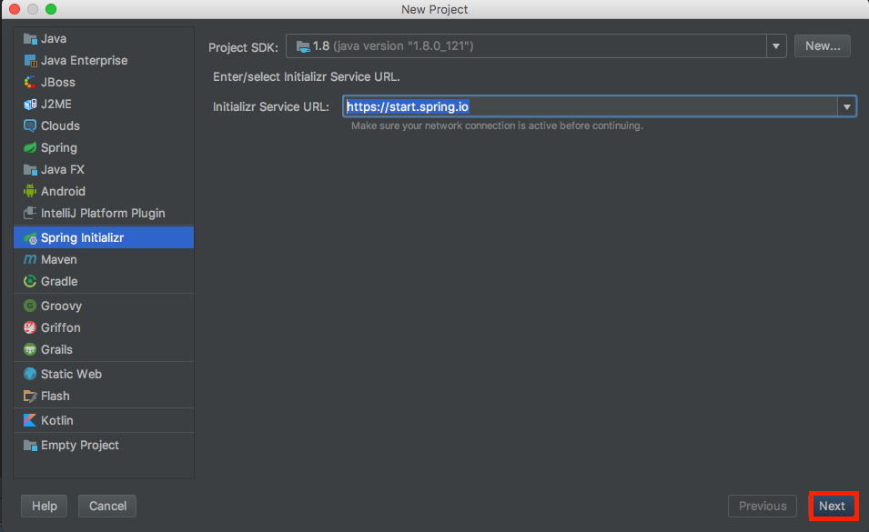
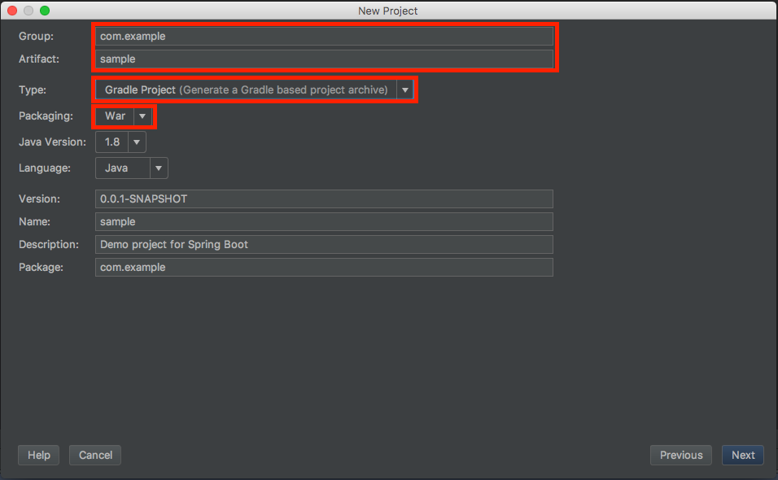
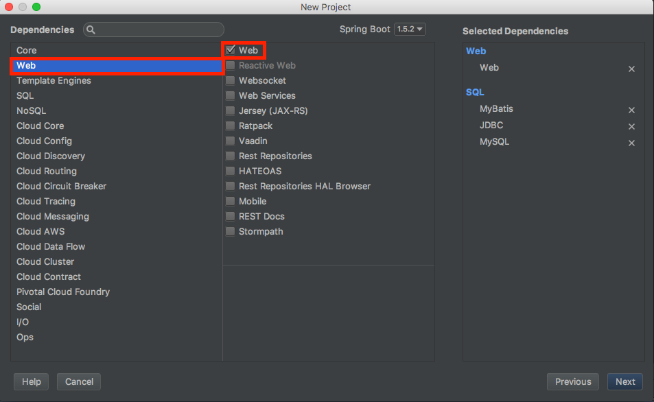
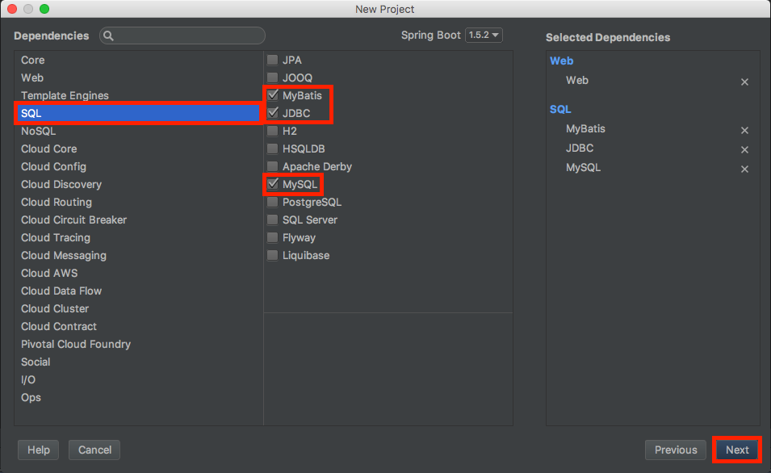
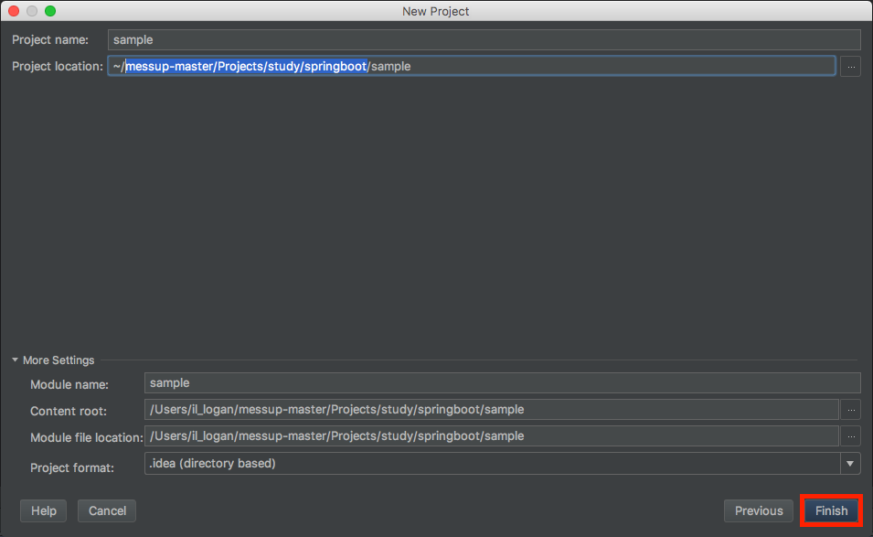
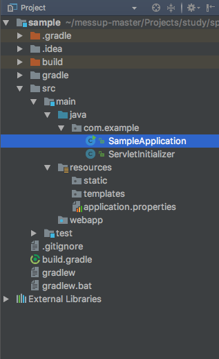
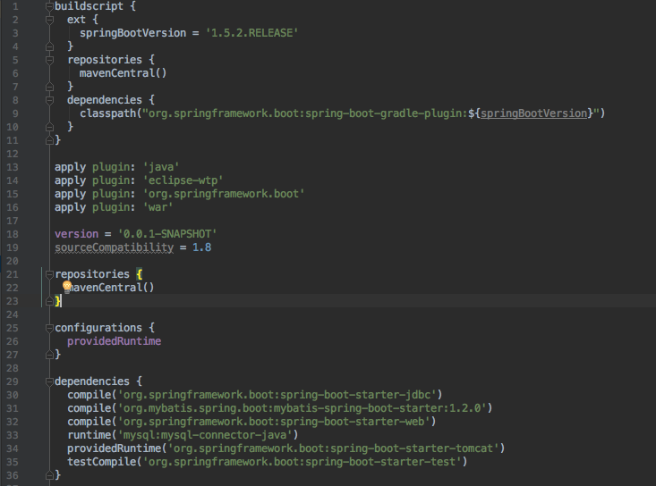
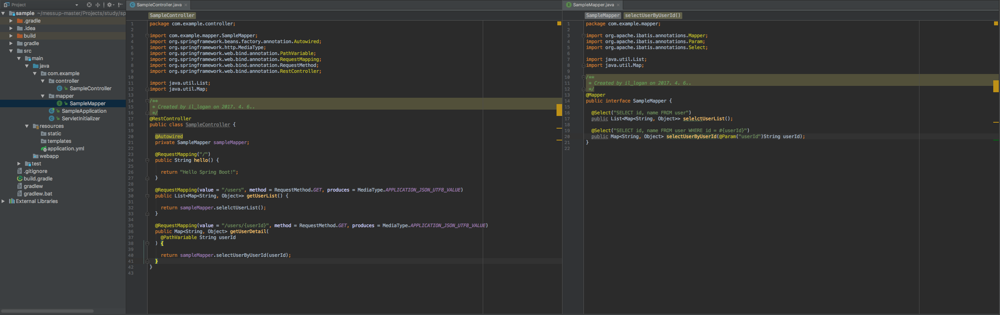
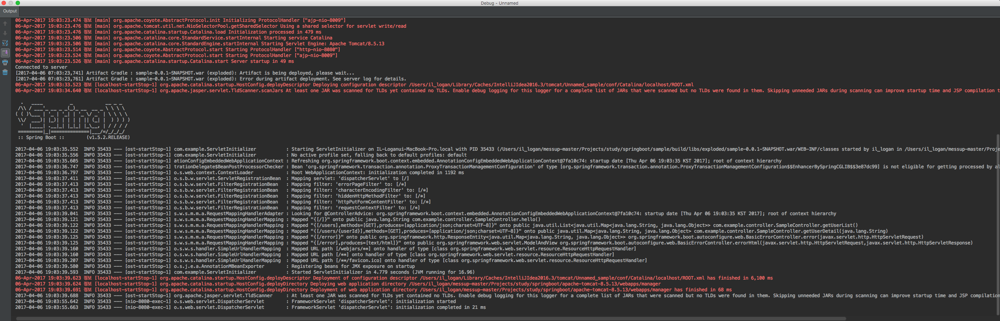
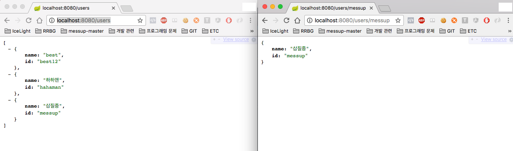

Spring Boot와 Mybatis, Mysql를 이용하여 간단한 서버 구성을 해보자
Intellij 기준 File > New > New Project 선택한다.
다음과 같은 화면이 보일것이다.

왼쪽메뉴칸에 Spring Initializr를 선택후 Project SDK(JAVA JDK 버전) 설정Initializr Service URL 주소를 https://start.spring.io 해주고 Next 클릭!
다음 화면으로 이동

Group,Artifact 편한대로 작성해 주시고Type 은 Gradle로 Packaging은 War로 해주시고 Next 클릭!.Type과 Packaging 바꾸는 이유는Maven 대신 Gradle 사용할것이고 War로 만들어
외부 톰캣으로 구동할것입니다.
임베디드 톰캣을 사용하실분들은 Jar로 해주시면되요.
다음 화면으로 이동


Web, SQL 탭목록으로 가셔서 빨간색으로 된부분들을 체크해 주세요.

프로젝트 폴더 위치 지정입니다. 편하신대로 해주시고 Finish 버튼 눌러주세요.
저랑 같은 방식으로 하셨다면 이런 폴더 구조이실꺼에요

이제 build.gradle 파일을 확인해 보죠

몇가지만 살펴 봅시다.
apply plugin: 'war': war 배포로 하셨다면 있어야 됩니다.compile('org.springframework.boot:spring-boot-starter-jdbc'): 데이터베이스 연결에 필요한 jdbc libcompile('org.mybatis.spring.boot:mybatis-spring-boot-starter:1.2.0'): mybatis 관련 libcompile('org.springframework.boot:spring-boot-starter-web'): WebSerivce에 필요한 libruntime('mysql:mysql-connector-java'): mysql connector lib
위에 적은 내용들은 있어야 합니다.
이제 springBoot 설정을 해봅시다.
기존 설정 파일은 properties로 되어 있지만 저는 yaml이란 걸로 해볼께요
yaml
spring:
datasource:
driver-class-name: com.mysql.jdbc.Driver
url: jdbc:mysql://localhost:3306/sample
username: root
password: 1234url, username, password는 개인 구축상황에 따라 변경해 주세요.
그럼 빠르게 Controller Mapper만들어 봅시다.(귀찮아서 Model은 생략 했습니다.)
SampleController.java
|
|
SampleMapper.java
|
|
전체 적인 모습

이제 서버를 실행 시켜 보자!!

대략 이렇게 나오면
이제 브라우저로 가 실행 확인해보자

성공!